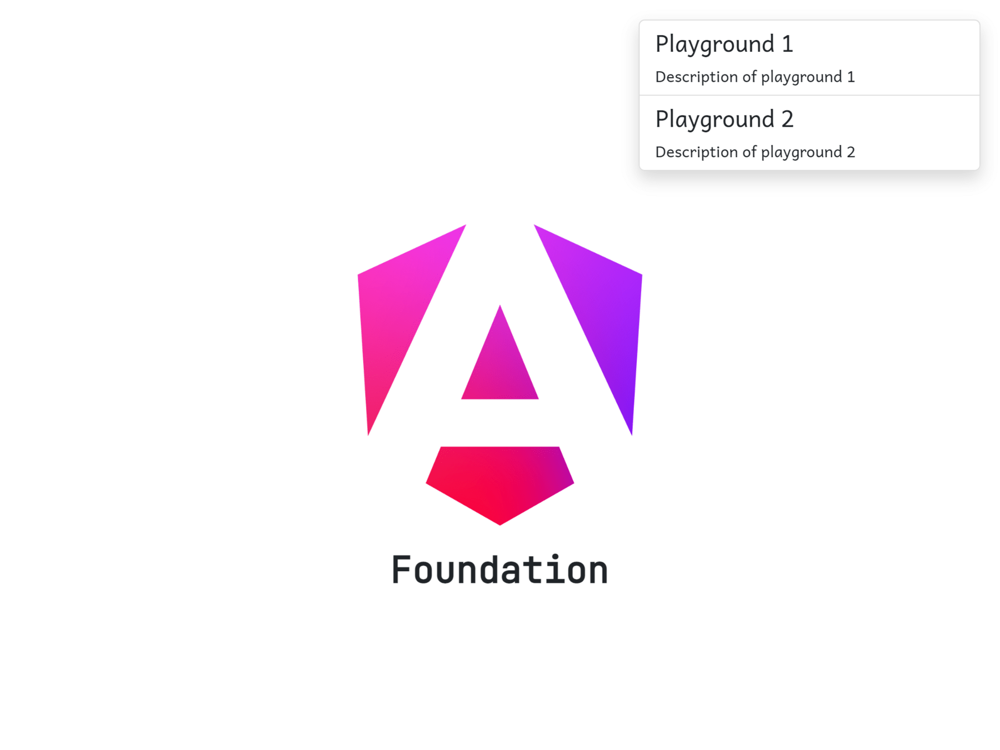

npm installThis will install all the dependencies for the Angular project. This happened automatically before, when we created a new project
Are you wondering why you cannot use the project you created before? First of all, we need some extra CSS styling, but also a feature module has already been add to the solution.
Besides that, a small chunk of HTML has been added to the index.html.
When the command has completed you should be able to run ng serve
